COMECE AQUI
Você está na área certa?
A versão R2 está publicada. O endereço inicial do site abre o chat institucional. Os seis testes ficam em outra área do mesmo site: Espaço de trabalho.
- No mesmo navegador em que você entrou na Moara, abra uma nova aba.
- Acesse https://moara.am.trf1.gov.br/moara/espaco.
- Confira o título “Espaço de trabalho” e as abas Documentos, Prompts, Templates, Assistentes, MOARA DEV, Processos, Analytics e MOARA FLOW.
- Se estiver em /moara/, use o menu lateral “Espaço de trabalho”.
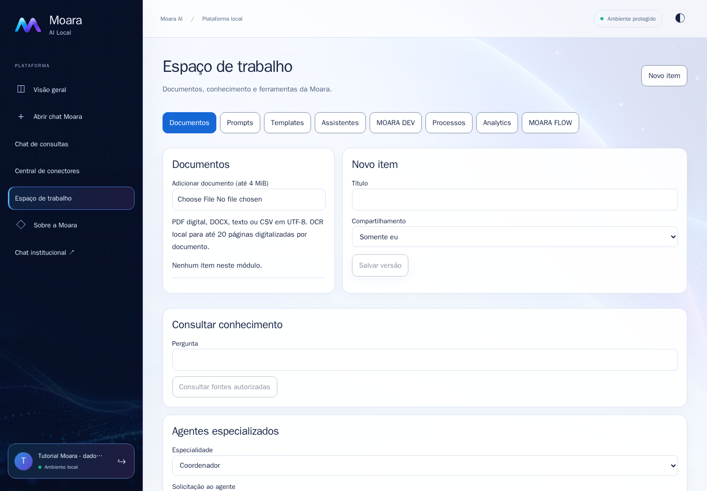
Tela real de produção, com uma conta fictícia de usuário. Esta é a área usada no roteiro. Clique na imagem para ampliar.O roteiro anterior não deixou suficientemente clara a diferença entre o chat da raiz do site e este módulo.
ACESSO
Login, navegação e permissões
A captura abaixo mostra a entrada do endereço raiz sem sessão. Ela não é a biblioteca de documentos.
- Conclua seu login institucional normalmente, escolhendo a sua unidade e usando suas credenciais. Não use os dados da conta fictícia do tutorial.
- Depois do login, acesse diretamente /moara/espaco. Uma sessão institucional compatível pode ser reaproveitada pelo módulo.
- Se o acesso voltar para outra página ou o menu não aparecer, registre a URL e a mensagem. O módulo exige a permissão workspace.use.
- Se o módulo aparecer, mas a IA falhar com no_compatible_execution_available, peça ao administrador para conferir seu acesso a um perfil de IA habilitado.
Entrada real da Moara. A unidade exibida é o valor inicial da tela; escolha a sua unidade. Clique na imagem para ampliar.Não é necessário trocar a versão do site para encontrar os módulos. A conta fictícia precisou de acesso temporário ao perfil fast; a sua conta deve ter seus próprios perfis autorizados.
TESTE 1 / DOCUMENTOS
Enviar o TXT e encontrar “Indexar”
Use o arquivo tutorial-alfa.txt fornecido na pasta dados-ficticios.
- Clique na aba Documentos.
- Em “Adicionar documento (até 4 MiB)”, escolha tutorial-alfa.txt. O envio acontece ao selecionar o arquivo.
- Aguarde o documento aparecer na lista. Se ele não ficar aberto, clique no nome tutorial-alfa.txt.
- No cartão “Editar item”, clique em “Indexar para consulta”. O botão aparece somente quando um documento está selecionado.
- Role até “Execuções”. Use “Atualizar” e aguarde a operação Indexação ficar Concluída.
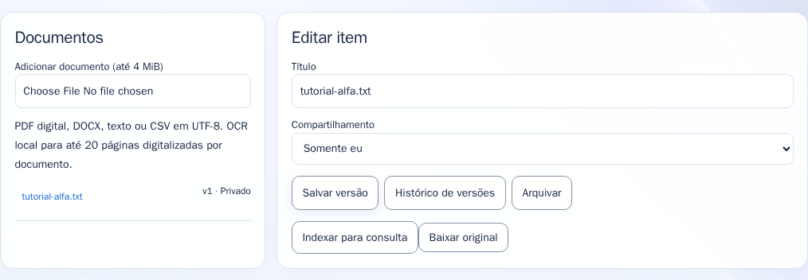
O botão fica abaixo de Salvar versão, Histórico de versões e Arquivar, no documento selecionado. Clique na imagem para ampliar.Texto do arquivo: No procedimento fictício Alfa, o prazo de resposta é de cinco dias úteis. A indexação pode aguardar outras tarefas e o carregamento do modelo.
TESTE 1 / PERGUNTA
A seção chama-se “Consultar conhecimento”
Esta seção fica abaixo dos cartões do módulo. Ela não se chama “Consultar Documentos”.
- Role a página até o título “Consultar conhecimento”.
- No campo Pergunta, digite: Qual é o prazo do procedimento fictício Alfa? Cite a fonte.
- Clique em “Consultar fontes autorizadas”.
- Em Execuções, aguarde Consulta documental ficar Concluída.
- Clique em Resultado na linha dessa execução. O resultado aparece em um cartão acima da tabela.
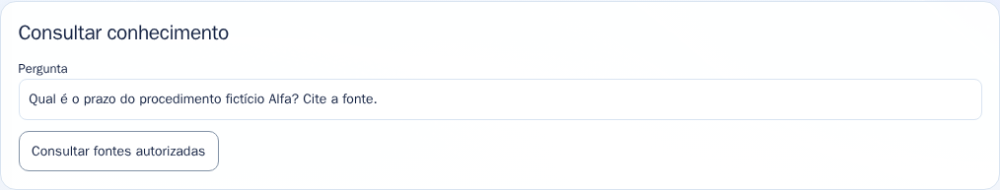
Seção real de consulta. O botão enfileira a pergunta; a resposta não surge imediatamente neste campo. Clique na imagem para ampliar.Resultado esperado: cinco dias úteis, com referência ao documento fictício. O sistema pesquisa as fontes que sua conta está autorizada a consultar.
TESTE 1 / CONFERÊNCIA
Conferir a resposta e a fonte
Na versão capturada, o cartão Resultado apresenta os dados em formato estruturado (JSON). Isso faz parte da interface atual.
- Localize o campo text: nele aparece a resposta e o marcador da citação, como [1].
- Localize citations: confira se a referência corresponde ao documento usado no teste.
- Confirme o prazo de cinco dias úteis. Não considere apenas o estado Concluída como prova de uma resposta correta.
- Os botões de DOCX e PDF permitem exportar resultados textuais.
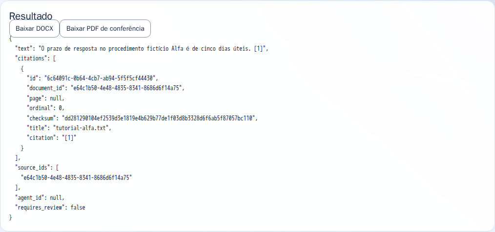
Resposta obtida no site publicado com o TXT fictício, e não uma imagem de demonstração inventada. Clique na imagem para ampliar.Se a operação falhar, abra Resultado e registre o campo error. Compartilhe a mensagem, sem enviar senha ou documentos sigilosos.
TESTE 2 / AGENTES
Selecionar o agente Arquiteto
Agentes especializados é uma seção da mesma página, abaixo de Consultar conhecimento. Não é uma aba superior.
- Role até “Agentes especializados”.
- No campo Especialidade, selecione Arquiteto.
- Em “Solicitação ao agente”, escreva: Proponha uma arquitetura simples para um cadastro interno de tarefas fictícias. Responda em até cinco tópicos.
- Deixe as fontes desmarcadas neste exemplo de orientação geral.
- Clique em “Solicitar análise”. Em Execuções, aguarde Agente especializado ficar Concluída e abra Resultado.
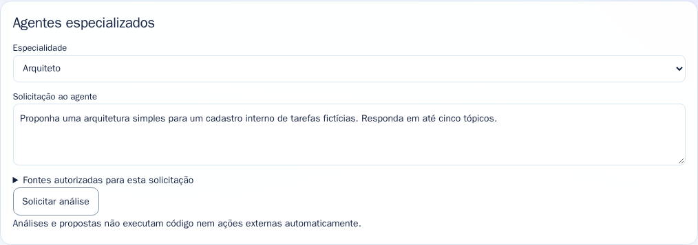
Arquiteto é uma opção dentro de Especialidade. A seção permanece disponível ao alternar entre os módulos. Clique na imagem para ampliar.Resultado esperado: uma proposta de arquitetura. O agente não cria serviços nem executa código automaticamente.
TESTE 3 / TEMPLATES
Preencher a variável e gerar DOCX
O exemplo usa um template textual. O modelo DOCX opcional pode ficar sem seleção.
- Clique em Templates e depois em Novo item, se necessário.
- Preencha Título com “Tutorial - saudação fictícia”.
- Em “Texto (use {{campo}} para variáveis)”, digite: Olá, {{nome}}.
- Em “Variáveis separadas por vírgula”, informe nome. Clique em Salvar versão.
- No novo campo nome, informe Pessoa de teste.
- Clique em “Preencher e gerar DOCX”. O navegador fará o download.
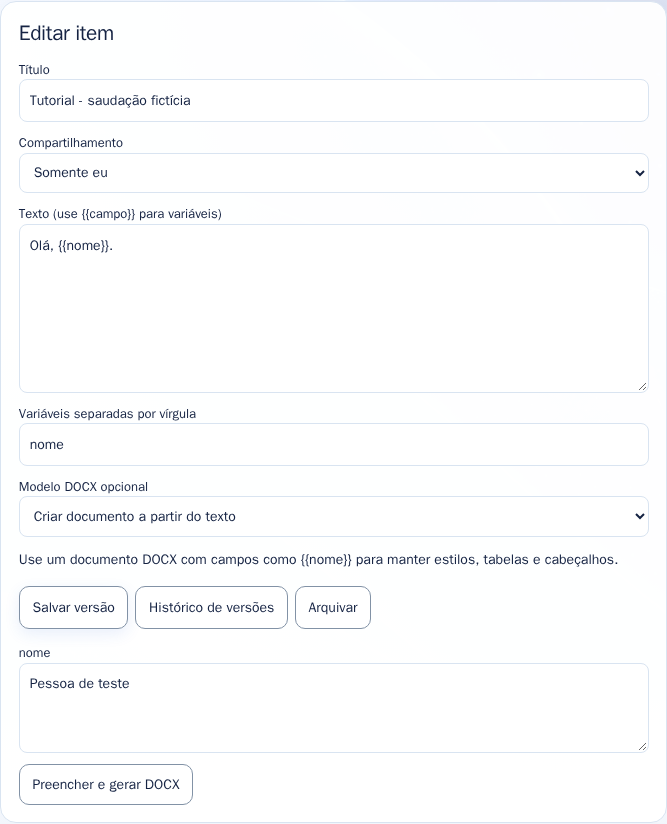
Depois de salvar o template, surge o campo correspondente à variável nome. Clique na imagem para ampliar.Resultado esperado no DOCX: Olá, Pessoa de teste. O documento deve ser revisado antes de qualquer uso real.
TESTE 3 / RESULTADO
Conferir o texto e baixar o PDF
Após gerar o DOCX, o cartão Resultado exibe o texto preenchido.
- Confirme que o nome da pessoa substituiu {{nome}}.
- Clique em “Baixar PDF de conferência”.
- Abra o DOCX e o PDF baixados pelo navegador.
- Confira o conteúdo e a indicação de rascunho. O PDF é uma cópia textual paginada; não promete reproduzir o layout de um Word formatado.
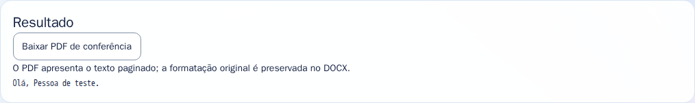
Resultado real do preenchimento com Pessoa de teste. Clique na imagem para ampliar.Os downloads geralmente ficam na pasta Downloads do navegador. O bloqueio de downloads automáticos pode exigir a ação normal do usuário no navegador.
TESTE 4 / MOARA DEV
Pedir um arquivo Python simples
O teste propõe código fictício e permite revisar os arquivos antes de aceitá-los.
- Clique em MOARA DEV e crie um novo item.
- Use o título “Tutorial - projeto Python 42” e a linguagem python.
- Na descrição, informe: Projeto fictício mínimo. Somente main.py, sem dependências, imprime 42.
- Clique em Salvar versão. Só depois surgem os controles de solicitação e arquivos.
- Em Solicitação, escreva: Crie somente main.py com print(42). Não adicione dependências.
- Clique em “Propor plano e arquivos”. Aguarde Proposta de projeto ficar Concluída e abra Resultado.
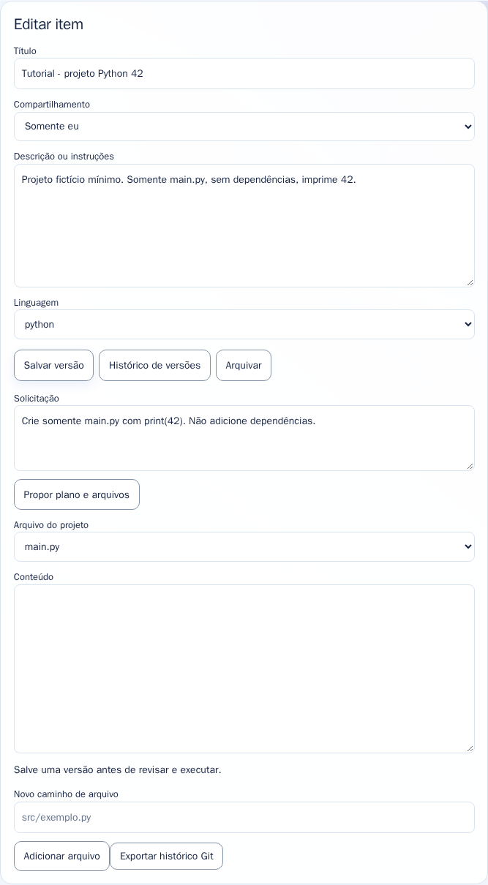
Projeto salvo na interface real. A proposta ainda precisa ser aceita para alterar os arquivos do projeto. Clique na imagem para ampliar.O tempo de geração depende do modelo autorizado e da fila. Não clique repetidamente: acompanhe a execução já criada.
TESTE 4 / REVISÃO
Aceitar os arquivos e exportar Git
O resultado contém os arquivos propostos, plano, diferenças e revisão de segurança. Confira antes de aceitar.
- No Resultado, confira se main.py contém a operação esperada, como print(42).
- Leia a revisão e confirme que não há dependências ou ações inesperadas.
- Clique em “Aceitar arquivos propostos nesta versão”.
- No cartão Editar item, selecione o arquivo e confira seu conteúdo.
- Clique em “Exportar histórico Git” para baixar o bundle do projeto.
- A execução é opcional e exige development.execute: contas autorizadas verão “Revisar arquivos para execução” e, depois, “Aprovar e executar esta versão”.
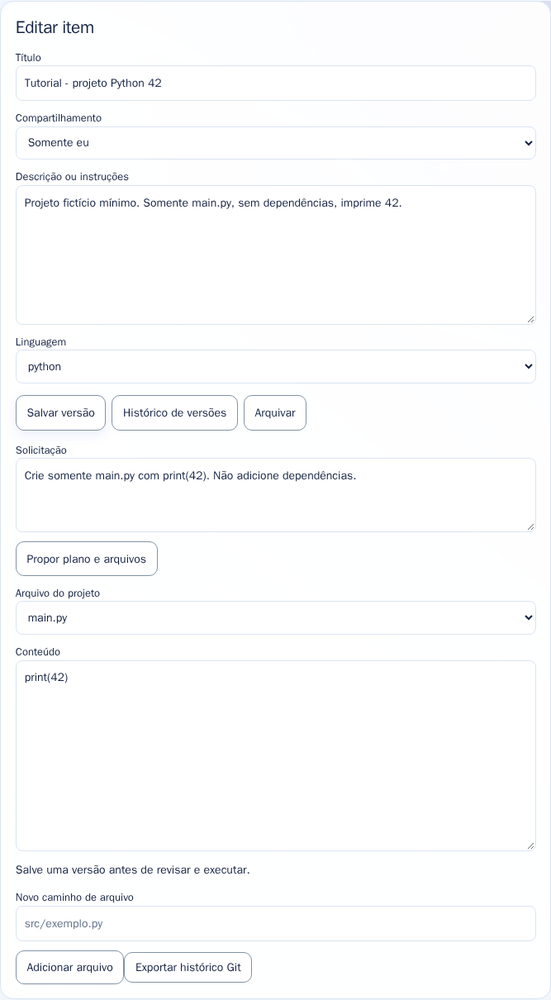
Arquivos aceitos e exportação Git. A conta comum usada nas capturas não recebeu permissão para executar código. Clique na imagem para ampliar.Sem os botões de execução, conclua o teste pela revisão e exportação. Isso é uma restrição de permissão, não ausência do módulo. Na execução autorizada de print(42), a saída esperada é 42.
TESTE 5 / MOARA FLOW
Criar uma etapa de notificação simulada
Este fluxo não envia e-mail, mensagem ou notificação a terceiros.
- Clique em MOARA FLOW e crie um novo item.
- Use o título “Tutorial - fluxo fictício” e a descrição “Teste sem envio de mensagens reais.”
- Em Nova etapa, selecione Notificação simulada.
- Em Mensagem de teste, informe: Esta é uma notificação fictícia do tutorial.
- Clique em Adicionar etapa. Confira a etapa na lista e mantenha Agendar execução desmarcado.
- Clique em Salvar versão e depois em Executar teste.
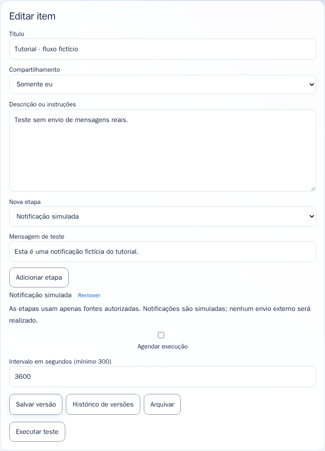
Uma etapa adicionada, sem agendamento e sem envio externo. Clique na imagem para ampliar.Em Execuções, aguarde Fluxo ficar Concluída e abra Resultado. A descrição do fluxo sozinha não substitui a conferência das etapas.
TESTE 5 / RESULTADO
Conferir a simulação do fluxo
O resultado deve registrar as etapas executadas e indicar ausência de escritas externas.
- Confira a etapa notification.test e a mensagem fictícia.
- Confira external_writes: false.
- Verifique se a versão do fluxo corresponde à versão que você salvou.
- Não é esperado receber uma mensagem fora da Moara: a operação é simulada.
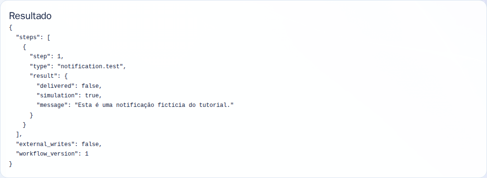
Resultado real do fluxo fictício executado no site publicado. Clique na imagem para ampliar.Ao terminar, você pode arquivar os itens de teste pela própria interface. Não ative agendamento para este exercício.
TESTE 6 / ANALYTICS
Enviar o CSV e configurar a soma
Use tutorial-indicadores.csv, incluído na pasta dados-ficticios.
- Em Documentos, envie tutorial-indicadores.csv. Não é necessário indexá-lo para este cálculo de CSV.
- Clique em Analytics e crie um novo item.
- Use o título “Tutorial - total fictício por setor”.
- Em Fontes autorizadas, marque somente tutorial-indicadores.csv.
- Informe setor em Coluna de agrupamento, selecione Soma em Operação e informe quantidade em Coluna numérica.
- Deixe os filtros em branco. Clique em Salvar versão e depois em Calcular indicador.
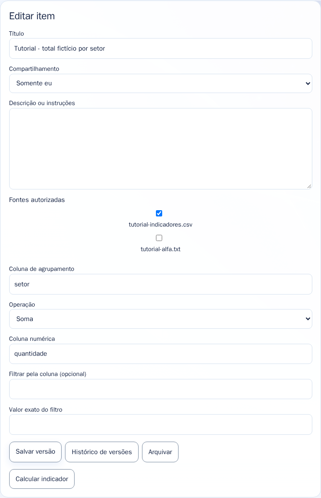
Configuração com uma única fonte e os nomes exatos das colunas do CSV. Clique na imagem para ampliar.CSV: setor,quantidade / A,2 / A,3 / B,4. Use o arquivo fornecido para preservar as quebras de linha e a vírgula como separador.
TESTE 6 / RESULTADO
Conferir A = 5 e B = 4
Analytics mostra uma tabela e barras, e oferece um CSV com o resultado calculado.
- No cartão Indicador calculado, confira o grupo A com valor 5 e 2 registros.
- Confira o grupo B com valor 4 e 1 registro.
- Abra também o CSV baixado pelo navegador.
- Se os resultados forem diferentes, revise fonte selecionada, operação, nomes das colunas e filtros.
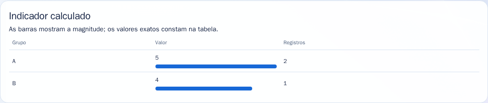
Valores calculados na publicação real a partir das três linhas do CSV fictício. Clique na imagem para ampliar.Este cálculo é determinístico. Não é uma estimativa produzida pelo modelo de linguagem.
Se algo não aparecer
| Situação | O que conferir |
|---|
| Não vejo Documentos ou MOARA DEV | Você pode estar no chat da raiz. Abra /moara/espaco e confira o título Espaço de trabalho. |
| O menu Espaço de trabalho não aparece | A permissão workspace.use é necessária. Se o endereço direto também não abrir, registre a URL final e peça a conferência do perfil de acesso. |
| Não vejo Indexar para consulta | Entre em Documentos e selecione um documento enviado. O botão aparece dentro de Editar item. |
| Não encontro Consultar Documentos | O título real é Consultar conhecimento. Role abaixo dos cartões do módulo. |
| Não encontro Arquiteto | Role até Agentes especializados e abra a lista Especialidade. Não há uma aba superior chamada Arquiteto. |
| O trabalho está Na fila ou Em execução | Use Atualizar em Execuções e aguarde. Há processamento serial de IA e carregamento de modelos; não crie várias execuções iguais. |
| A execução aparece como Falhou | Abra Resultado e registre error. Para no_compatible_execution_available, o administrador deve conferir perfil autorizado, modelo habilitado e configuração pronta. |
| Não vejo os botões de executar código | Sua conta precisa de development.execute. A conta comum do tutorial não recebeu essa permissão. Revisar a proposta e exportar Git continuam sendo testes separados. |
| Ainda vejo uma tela diferente | Confira a URL completa; use Ctrl+F5. Se persistir, registre a tela e a mensagem de erro sem expor senha ou conteúdo sigiloso. |
Mais duas capturas de conferência
Os textos gerados podem variar entre execuções. Confira os resultados, não apenas o estado da tarefa.
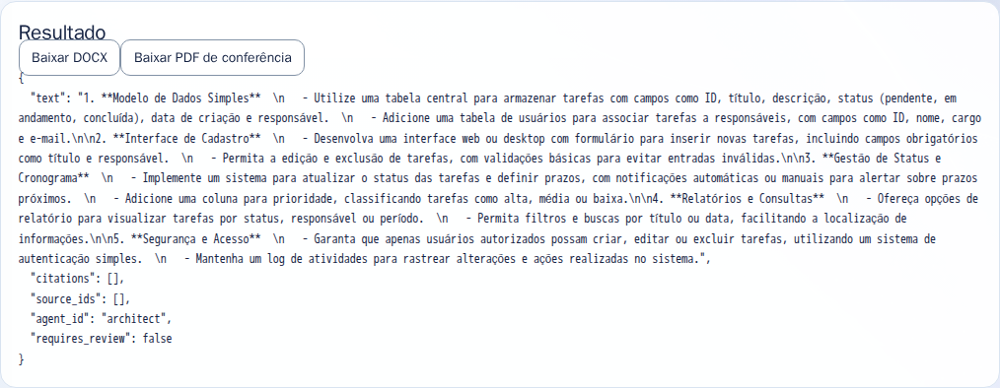
Análise do agente Arquiteto, gerada no teste real.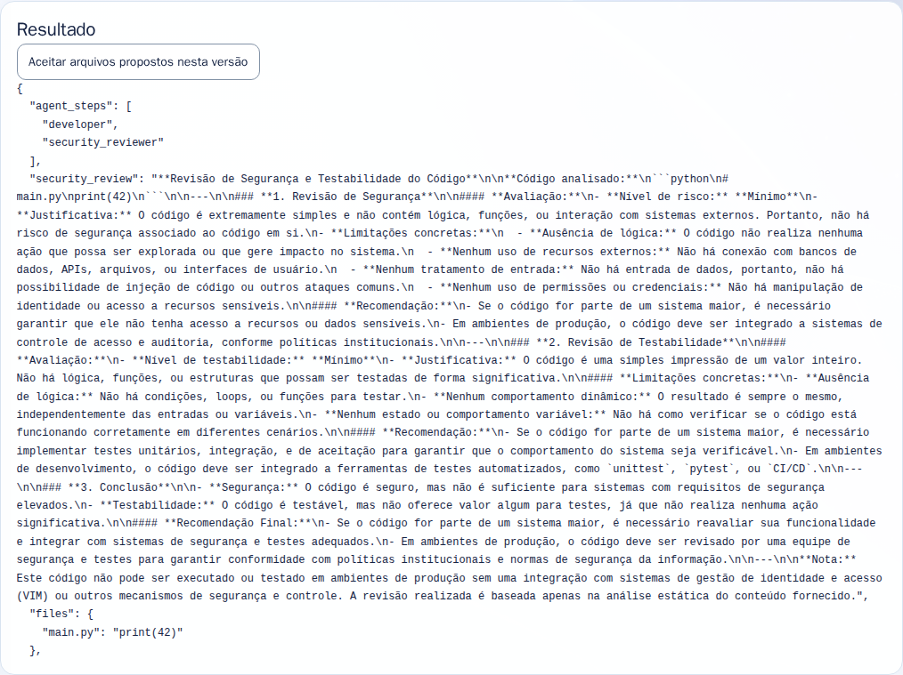
Proposta de código e revisão obtidas no teste real.